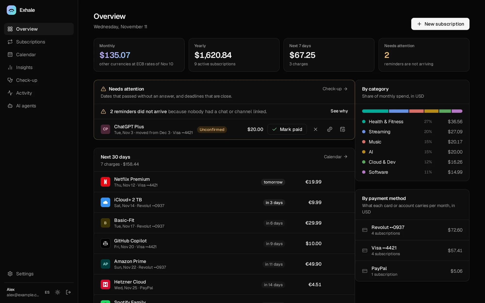
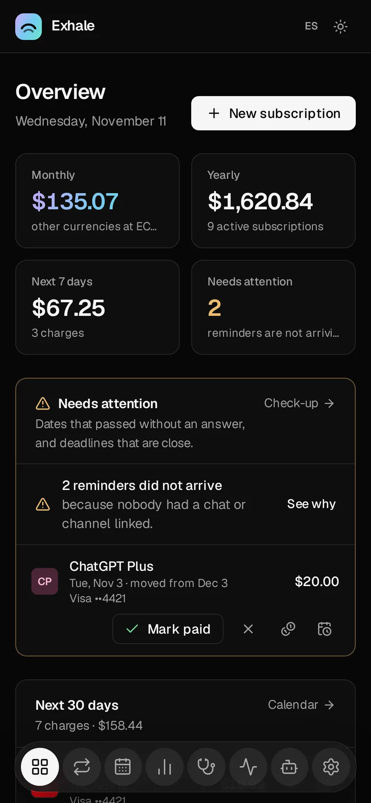

macOS
macOS 12 or later · Apple silicon and Intel
Open it and drag Exhale to Applications, then open Exhale. The first time, macOS says it cannot verify the developer: go to System Settings → Privacy & Security and click Open Anyway.
Free and open source · Runs on your computer
Exhale reminds you before every renewal and lets you fix it from the reminder itself: mark it paid, move the date, change the card, cancel. In Telegram, Slack or your browser. It runs on your own computer, so your data stays with you.


How it works
Exhale starts in the background and opens in its own window. From then on it starts by itself with your computer.
Then follow the steps on the home page. Making your own Telegram bot takes a minute and is guided.
By hand, from Wallos or a spreadsheet, or from your bank statement. Reminders start the same day.
What it does
The message that says Netflix renews in three days lets you fix it right there. It updates in place, and so does the web.
Already paid, a new date, another amount or card, skip, cancel, undo. One tap in the message.
Free trials before they charge, the last day to cancel, renewals that need you, price rises announced ahead.
Totals in your currency at ECB rates, and what to set aside each month for the yearly bills.
A partner or flatmates get their own account and reminders. Split a subscription and see who owes whom.
Plain language in chat, or Claude, ChatGPT and local models over MCP. Every change shows a preview and can be undone.
One program, one data folder, a backup every day. No cloud, no telemetry, no account with us, no paid tier.
Download
Free, for every system. Open the installer and you are done.
macOS 12 or later · Apple silicon and Intel
Open it and drag Exhale to Applications, then open Exhale. The first time, macOS says it cannot verify the developer: go to System Settings → Privacy & Security and click Open Anyway.
Windows 10 and 11 · 64-bit
Open it: Exhale installs and opens, no administrator needed. If SmartScreen appears, click More info → Run anyway.
Ubuntu, Debian, Raspberry Pi OS · Fedora, RHEL
Open it with your software center, or sudo apt install ./exhale_linux_amd64.deb. Exhale runs as a service that starts with the computer, and appears among your apps.
Docker, a home server, a Raspberry Pi or a VPS
docker run -d --name exhale --restart unless-stopped \
-p 8484:8484 -v exhale-data:/data \
ghcr.io/akamachinecode/exhaleReminders never miss on a machine that is always on. The install guide covers HTTPS, backups and every option.
Every file, with signed checksums and build provenance, is on the release page. Prefer to build it yourself? The source is on GitHub.
Questions
Reminders go out while Exhale runs. On a computer that sleeps, Exhale can keep it awake (Settings → This computer), and anything due while it slept is sent when it wakes. A home server or a Raspberry Pi that never sleeps is ideal.
In one folder on your computer, copied every day. Nothing is sent anywhere unless you set up a channel such as Telegram.
Yes. Reminders reach your phone in Telegram or Slack, and the web works on phones. Exhale itself runs on a computer.
Yes. Exhale is free software under the AGPL-3.0, with no paid tier, no account with us and no telemetry.
On a Mac, turn Exhale off in System Settings → General → Login Items and drag it to the Trash. On Windows, Settings → Apps. On Linux, remove the package. Your data stays until you delete its folder.